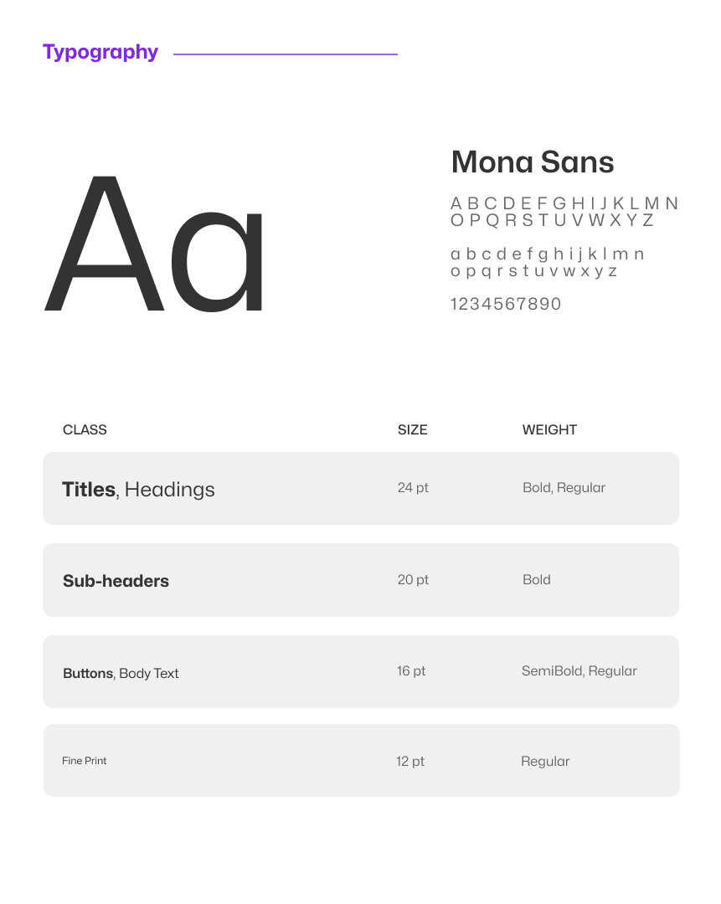

→ Swop: UX Case Study
Overview
Swop is a product reselling app with a strong emphasis on sustainability. Unlike traditional reselling platforms, Swop centers around the concept of trading to facilitate transactions between buyers and sellers.
Its local matching feature encourages sustainable, cost-free consumerism while providing users with a rewarding alternative to conventional online shopping.
Key Skills
- UI Design
- Design Systems
- UX Research
- Prototyping
VIEW PROTOTYPE
Process
Define
- Address the problem
- User journey
- Goals
→
Research
- Brainstorm
- Competitive Analysis
- Design Sprint
→
Design
- Wireframing
- Visual Design
- Prototyping
Define
The Problem:
- Environmental Impact and Waste:
The rise of consumerism contributes to environmental waste and the growing issue of landfills being filled with short-lived items. - Cost of Living and Affordability:
Shopping second-hand has become increasingly popular due to increasing prices and cost of living. - Inconvenience of Traditional Reselling Platforms:
Existing product reselling platforms may not provide an efficient way to connect users with mutual interests in trading items.
The Goals:
- Simplify the Trading Process:
Implementing a "matching" system similar to dating apps ensures that users are presented with potential trades that match their interests. - Provide a Cost-Effective Solution:
By allowing users to trade goods directly, it eliminates the need for monetary transactions. - Promote Sustainable Consumption:
Swop aims to reduce environmental impact by encouraging users to trade and swap items they no longer need, giving these products a second life instead of contributing to waste.
Research
Competitive Analysis:
Depop
- Focus on apparel
- Users have a history of exploiting unconstrained pricing
- Trading is possible, however, it is solely facilitated by users
- The in-app payment method (Depop Pay) can be complicated and inconvenient
Facebook (Marketplace)
- Wide range of product categories
- An extension of the main Facebook social media app
- No in-app payment methods
- Communication between users is mainly self-sufficient

ThredUp
- Focus on apparel, donating, sustainability
- Typical online storefront, no direct exchange between users
- Trading is not possible
- Sophisticated in-app payment methods
- Includes features that highlight sustainability metrics
User Flow:
Design Sprint Outcomes:
At the end of the design sprint, it was concluded that Swop would be based around three main ideas/features: user-to-user connection, refined trading processes, and sustainability.
Design

Takeaways
The Swop project has been a journey of blending user-centered design with sustainability-driven goals. Through the development and iteration process, several key takeaways have emerged:
Simplicity Drives Engagement:
Keeping the design minimalistic was essential in ensuring that users could easily navigate the app and participate in its features.
Balancing Visuals with Function:
The UI reinforced the importance of balancing visual design with usability. The chosen color palette and typography not only reflect the brand’s identity but also enhance user ease, especially in a photo-heavy environment.
Promoting Sustainable Practices:
Swop not only provides a cost-effective solution but also encourages users to adopt more environmentally conscious habits.